유통관리사-2급 (2018-04-15 기출문제)
1과목: 유통물류일반
1. 다음은 유통산업발전법에서 정의한 체인사업의 한 유형이다. 이에 해당하는 체인사업의 유형은?
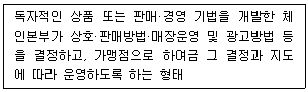
- 프랜차이즈형 체인사업
- 임의가맹형 체인사업
- 직영점형 체인사업
- 조합형 체인사업
- 카르텔형 체인사업
(정답률: 84%)

2. 매슬로우(A. Maslow)의 욕구단계이론에 따라 하급욕구에서 고급욕구로 올바르게 나열한 것은?
- 생리적 욕구 - 소속 욕구 - 안전 욕구 - 자존 욕구 - 자아실현 욕구
- 생리적 욕구 - 소속 욕구 - 자존 욕구 - 안전 욕구 - 자아실현 욕구
- 생리적 욕구 - 안전 욕구 - 소속 욕구 - 자존 욕구 - 자아실현 욕구
- 생리적 욕구 - 안전 욕구 - 자존 욕구 - 소속 욕구 - 자아실현 욕구
- 생리적 욕구 - 자존 욕구 - 소속 욕구 - 안전 욕구 - 자아실현 욕구
(정답률: 73%)
3. 유통경로가 일반적으로 창출하는 효용과 예시로 가장 옳지 않은 것은?
- 시간효용 : 편의점은 24시간 영업한다.
- 장소효용 : 소비자의 집 근처에 편의점이 있다.
- 소유효용 : 제조업자의 제품소유권이 소비자에게 이전된다.
- 형태효용 : 소비자가 원하는 양을 분할해서 구매 가능하다.
- 정보효용 : 소비자에게 유용한 정보를 제공한다.
(정답률: 35%)
4. 채찍효과(bullwhip effect)를 줄일 수 있는 방안으로 가장 옳지 않은 것은?
- 각각의 유통주체가 독립적인 수요예측을 통해 정확성과 효율성을 높인다.
- 공급리드타임을 줄일 수 있는 방안을 마련한다.
- 공급체인에 소속된 각 주체들이 수요 정보를 공유한다.
- 지나치게 잦은 할인행사를 지양한다.
- EDLP(항시저가정책)를 통해 소비자의 수요변동 폭을 줄인다.
(정답률: 58%)
5. 유통산업발전법 제24조 1항 유통관리사의 직무에 해당하지 않는 것은?
- 유통경영·관리 기법의 향상
- 유통경영·관리와 관련한 계획·조사·연구
- 유통경영·관리와 관련한 허가·승인
- 유통경영·관리와 관련한 진단·평가
- 유통경영·관리와 관련한 상담·자문
(정답률: 73%)
6. 마케팅 믹스 중 환경변화에 대응하거나 조정을 하여야 할 필요가 생겼을 경우, 가장 유연성 있게 대응하기 어려운 요소는?
- 가격
- 제품
- 촉진
- 유통경로
- 디자인
(정답률: 78%)
7. 기업의 외부환경분석기법으로 활용되는 포터(M. Porter)의 산업구조분석에서는 산업의 수익률에 영향을 미치는 5대 핵심요인을 제시하고 있는데, 이에 해당되지 않는 것은?
- 산업내의 경쟁
- 대체재의 위협
- 공급자의 힘
- 구매자의 힘
- 비용구조
(정답률: 64%)
8. 다음 글 상자 안의 경영성과를 분석하는 여러 활동성 비율들을 계산할 때, 공통적으로 반영하는 요소는?
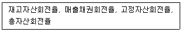
- 재고자산
- 매출액
- 영업이익
- 자기자본
- 고정자산
(정답률: 64%)
9. 온라인 쇼핑 환경에 대한 설명으로 가장 옳지 않은 것은?
- 오프라인과 온라인을 넘나드는 O2O 서비스가 증가하고 있다.
- 고객중심으로 채널을 융합하는 옴니채널로의 전환이 확산되고 있다.
- 방대한 데이터를 바탕으로 개인이 원하는 서비스를 큐레이션하여 제공한다.
- 온라인 유통업체들은 신성장 전략으로 NB상품의 개발과 같은 제품 차별화에 적극적이다.
- e-커머스는 식료품을 포함한 일상소비재 시장으로 확산되어 가는 추세이다.
(정답률: 75%)
10. 다음 중 집중적 유통경로(intensive distribution channel)에 가장 적합한 것은?
- 식료품, 담배 등을 판매하는 편의점
- 카메라 렌즈를 전문적으로 판매하는 상점
- 고급 의류 및 보석을 판매하는 상점
- 특정 브랜드의 전자제품만 판매하는 매장
- 독특한 디자인 가구를 판매하는 가구점
(정답률: 63%)
11. 제조업체에 의해 개발, 생산, 프로모션 등에 관한 활동이 이뤄지고 여러 유통업체에 의해 판매되는 상품을 무엇이라고 하는가?
- 개별상표(Private Brand) 상품
- 전국상표(National Brand) 상품
- 무상표(Generic Brand) 상품
- 점포상표(Store Brand) 상품
- 경쟁상표(Fighting Brand) 상품
(정답률: 61%)
12. 다음 글 상자에서 설명하는 용어는?
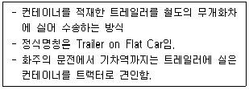
- 버디백(birdy back)
- 피기백(piggy back)
- 피쉬백(fishy back)
- 도기백(doggy back)
- 호스백(horse back)
(정답률: 75%)
13. 유통경로의 전방흐름기능만으로 올바르게 짝지어진 것은?
- 협상, 소유권, 주문
- 금융, 주문, 시장정보
- 협상, 금융, 위험부담
- 촉진, 물리적 보유, 소유권
- 대금지급, 금융, 위험부담
(정답률: 61%)
14. 경로구성원들 중 재고보유에 따른 위험을 누가 감수하는지에 따라 경로구조가 결정된다는 내용을 담고 있는 이론은?
- 대리이론(Agency theory)
- 정치-경제관점 이론(Political-economy perspective)
- 게임이론(Game theory)
- 연기-투기이론(Postponement-speculation perspective)
- 거래비용이론(Transaction cost analysis)
(정답률: 76%)
15. 기업이 선택할 수 있는 주요 수송 수단인 철도, 육로(트럭), 해상운송, 항공, 파이프라인을 상대적으로 비교했을 때 가장 옳지 않은 것은?
- 해상수송은 광물이나 곡물을 수송하는데 경제적이다.
- 철도수송은 전체 수송에서 차지하는 비중이 감소하는 추세이나 육로의 정체현상으로 재활성화 될 가능성이 있다.
- 파이프라인수송은 단위 당 비용, 속도, 이용 편리성 측면에서 상대적으로 우수하다.
- 항공수송은 신속하지만 단위 거리 당 비용이 가장 높다는 단점이 있다.
- 육상수송은 자체적인 운송뿐만 아니라 선박이나 항공과 결합해서 널리 활용된다.
(정답률: 44%)
16. 유통 개방정도에 따른 내용으로 옳은 것은?
- 정해진 지역에서 특정 경로구성원만이 활동하는 유통방식은 집중적 유통이다.
- 시장을 더 넓게 개척하기 위해서 많은 경로구성원들을 이용함으로써 시장의 노출을 극대화하는 유통방식은 집중적 유통이다.
- 슈퍼마켓에서 팔리는 대부분의 소비재는 전속적 유통이다.
- 유통비용을 낮춤과 동시에 경로구성원의 수가 많을 때보다 구성원들과의 관계를 더 유지할 수 있는 유통방식은 집중적 유통이다.
- 제품과 연관된 배타성과 유일성의 이미지를 더욱 효과적으로 소비자들에게 전달할 수 있는 유통방식은 집중적 유통이다.
(정답률: 46%)
17. 소매업 변천과정에 관련된 가설에 대한 내용으로 옳은 것은?
- 수레바퀴가설 : 소매상은 유통시장진입 초기에 고가격, 고마진, 고서비스의 점포운영방식으로 진입하여, 경쟁우위 확보를 위해 저가격, 저마진, 저서비스 운영방식으로 전환된다.
- 수레바퀴가설 : 소매기관들이 처음에는 혁신적인 형태에서 출발하여 성장하다가 새로운 개념을 가진 신업태에게 그 자리를 양보하고 사라진다고 주장한다.
- 수레바퀴가설 : 비가격적인 요인만을 소매업 변천의 주원인으로 보고 있다는 한계점이 있다.
- 소매수명주기 가설 : 도입기, 성장기, 성숙기, 쇠퇴기로 구분하는데 모바일유통(M-commerce)은 현재 쇠퇴기에 있다고 평가된다.
- 소매아코디언 가설 : 소매상은 제품가격변화에 초점을 맞춘 이론으로, 높은 가격으로 판매하는 업태에서 낮은 가격으로 판매하는 업태로 변화된다는 이론이다.
(정답률: 61%)
18. 종업원 인센티브제도에 관한 내용으로 옳지 않은 것은?
- 성과배분제는 물자, 노동의 낭비근절과 더 나은 제품과 서비스 개발을 통해 원가를 절감할 수 있다는 가정에 근거를 둔다.
- 변동급여제도 중 수수료를 통한 급여는 실적위주보상을 통해 영업활동을 관리하는 유용한 수단이 된다.
- 주식소유권(stock ownership)은 직원들로 하여금 회사주식을 소유하게 함으로써 회사 소유주의 일부가 되기를 장려하는 방법이다.
- 기업에서 신제품이 출시되면 업적을 치하하기 위해 감사패, 상품권, 선물 등을 나눠주는 것은 인정포상의 한 형태이다.
- 팀 구성원의 존재가 개인별로 업무를 할 때보다 더욱 강력하고 지속적인 행동을 유발시키는 것은 개인인센티브 제도에 속한다.
(정답률: 65%)
19. 재고관리자가 고객의 수요에 대응하여 최소의 재고비용으로 적정량의 재고를 유지하기 위해 경제적 주문량(EOQ)을 계산할 때 직접적으로 필요하지 않은 항목은?
- 주문비
- 연간수요량
- 연간주문주기
- 평균재고유지비율
- 재고품의 단위당 가치(가격)
(정답률: 36%)
20. 창고관리의 기능 중 이동(movement)의 하부활동에 속하지 않는 것은?
- 주문과 선적기록에 대한 상거래 확인하기
- 상품을 보관하기 위해 창고로 이동시키기
- 안전재고 유지하기
- 고객의 요구에 맞게 포장하여 출고준비하기
- 상품 선적하기
(정답률: 61%)
21. '계약물류'라고도 불리며, 물류 효율화를 위해 기업이 물류전문업체에게 짧게는 1년에서 길게는 5년 이상의 장기계약을 통해 물류기능을 아웃소싱하는 것은?
- 제1자물류
- 제2자물류
- 제3자물류
- 제4자물류
- 자회사물류
(정답률: 80%)
22. 포장물류의 모듈화가 지체되고 있는 이유로서 옳지 않은 것은?
- 물품형태가 모듈화에 적합하지 않은 것이 많기 때문이다.
- 포장물류 모듈화의 필요성에 대한 인식이 아직은 다른 물류분야에 비하여 낮기 때문이다.
- 포장의 모듈화를 위해서는 기존의 생산설비 및 물류설비를 변경하여야 하는 문제가 있기 때문이다.
- 수배송, 보관, 하역 등에 있어서는 물품의 거래단위가 한 포장단위가 안 되는 소화물인 경우가 많기 때문이다.
- 다품종 대량생산과 경쟁 격화로 인하여 공업포장 중심의 생산지향형 포장으로 가는 경향이 강하기 때문이다.
(정답률: 67%)
23. 공급사슬관리(SCM)의 성과측정 방법에 대한 설명으로 가장 옳지 않은 것은?
- SCM수행에 대한 실질적인 성과를 보여 줄 수 있어야 한다.
- 성과측정은 개별 기업의 성과에 초점을 맞춰야 한다.
- SCM수행과 관련한 상세한 데이터를 보여줄 수 있는 매트릭스가 필요하다.
- 주문주기 감소, 비용절감, 학습효과 향상은 프로세스 측정에 해당된다.
- 판매 및 수익 증가, 고객만족 증가는 결과 측정에 해당된다.
(정답률: 67%)
24. 수송과 배송의 효율적 관리에 대한 설명으로 가장 옳지 않은 것은?
- 소화물 수송과 비교하면 대형화물로 만들어 수송하는 경우 단위당 고정비가 절감되어 수송비가 적게 든다.
- 공동수배송은 일정지역 내에 있는 기업이 협업함으로써 이루어질 수 있다.
- 효율적인 수배송을 위해 복화율은 최소로 유지해야 한다.
- 공동배송이 실시되기 위해서는 물류에 대한 기존의 통제권을 제3자에게 넘겨 줄 수 있는 제조업체의 인식전환이 필요하다.
- 배송계획의 개선에 의해서 배송시간과 주행거리를 최소한으로 통제하며 화물량의 평준화를 가능하게 해야 한다.
(정답률: 64%)
25. 최근이나 미래의 유통환경 변화에 대한 내용으로 가장 거리가 먼 것은?
- 인구성장 정체로 인해 상품시장의 양적 포화와 공급 과잉을 초래하게 될 것이다.
- 노인인구 증가와 구매력을 동반한 노인인구 증가는 건강과 편의성을 추구하는 새로운 수요를 만들 것이다.
- 나홀로가구 증가로 인해 소용량제품, 미니가전제품 등 1인가구를 위한 서비스가 등장하고 있다.
- 소비자가 제품개발과 유통과정에도 참여하는 등 능동적인 소비자가 나타났다.
- 블로거 마케터 등 온라인마케터의 영향력이 커져 프로슈머의 필요성은 점차 사라지고 있다.
(정답률: 72%)
2과목: 상권분석
26. 도시는 도심상권, 부도심상권, 지구상권, 주거지 근린상권 등으로 계층화된 상권구조를 가지며, 이들 상권은 서로 다른 카테고리의 상품을 주로 판매한다는 도시상권구조의 계층화를 설명하는 것과 가장 관련이 있는 이론은?
- Reilly의 소매인력이론
- Converse의 소매인력법칙
- Huff의 상권분석모델
- Huff의 수정된 상권분석모델
- Christaller의 중심지이론
(정답률: 53%)
27. 쇼핑센터 등 복합상업시설에서는 테넌트믹스(tenant mix)전략이 중요하다고 하는데 여기서 말하는 테넌트는 무엇인가?
- 앵커스토어
- 자석점포
- 임차점포
- 부동산 개발업자
- 상품 공급업자
(정답률: 61%)
28. 입지의 유형을 공간균배의 원리나 이용목적에 의해 구분할 때 (ㄱ)적응형입지와 (ㄴ)집재성입지의 대표적인 특징을 순서대로 올바르게 나열한 것은?
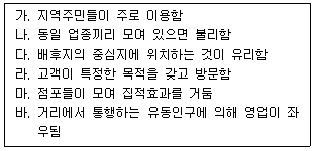
- (ㄱ)가, (ㄴ)다
- (ㄱ)바, (ㄴ)마
- (ㄱ)가, (ㄴ)마
- (ㄱ)라, (ㄴ)나
- (ㄱ)바, (ㄴ)다
(정답률: 44%)
29. 점포가 위치하게 되는 부지의 위치 및 특성에 대한 일반적 설명으로 옳지 않은 것은?
- 획지는 건축용으로 구획정리를 할 때 한 단위가 되는 땅을 말한다.
- 획지 중에서 두 개 이상의 도로에 접한 경우를 각지라고 한다.
- 각지는 1면각지, 2면각지, 3면각지 등으로 불리기도 한다.
- 각지는 일조와 통풍이 양호하고 출입이 편리하며 광고효과가 높다.
- 각지는 상대적으로 소음, 도난, 교통 등의 피해를 받을 가능성이 높다는 단점이 있다.
(정답률: 54%)
30. 다양한 상권의 유형들 중에서 아래와 같은 특성을 갖는 상권은 무엇인가?
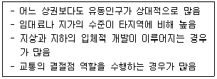
- 근린상권
- 역세권상권
- 아파트단지상권
- 일반주택가상권
- 사무실상권
(정답률: 76%)
31. 소매업태별 입지전략 또는 입지에 따른 여타의 소매전략에 대한 설명으로 가장 옳지 않은 것은?
- 기생형 점포는 목적형 점포의 입지를 고려하지 않고 독립적으로 입지하여야 한다.
- 선매품 소매점은 경합관계에 있는 점포들이 모여 있는 곳에 입지해야 한다.
- 보완관계보다 경합관계가 더 큰 편의품 소매점들은 서로 떨어져 입지해야 한다.
- 목적형 점포는 수요가 입지의 영향을 크게 받지 않아 입지선정이 비교적 자유롭다.
- 쇼핑센터에 입지한 소규모 점포들은 앵커스토어와 표적고객이 겹치는 경우가 많다.
(정답률: 69%)
32. 소비자들이 유사한 점포들 중에서 점포를 선택할 때는 가장 가까운 점포를 선택한다는 가정을 토대로 하며, 상권경계를 결정할 때 티센다각형(thiessen polygon)을 활용하는 방법은?
- Huff모델
- 입지할당모델
- 유사점포법
- 근접구역법
- 점포공간매출액비율법
(정답률: 37%)
33. 넬슨(R.L.Nelson)의 입지선정 원칙과 그에 관한 설명으로 옳지 않은 것은?
- 누적적 유인력 : 동일업종의 집적에 의한 유인효과
- 성장가능성 : 상업환경, 주거환경, 소득환경, 교통환경의 변화 가능성
- 중간저지성 : 상호보완되는 점포들이 근접하여 얻게 되는 시너지효과
- 경제성 : 부지비용, 임대료, 권리금 등의 입지비용 정도
- 상권의 잠재력 : 시장점유율이 확대될 가능성
(정답률: 68%)
34. 경쟁분석은 입지선정과정을 위한 필수적 활동이다. 경쟁점포에 대한 조사, 분석과 관련된 설명으로 가장 옳지 않은 것은?
- 경쟁점포에 대한 방문조사가 경쟁분석의 유일한 방법으로 활용된다.
- 상품구색, 가격, 품질이 유사할수록 경쟁강도가 높은 경쟁점포이다.
- 경쟁점포 및 경쟁구조를 분석할 때는 상권의 계층적 구조를 고려해야 한다.
- 직접적인 경쟁점포뿐만 아니라 잠재적인 경쟁점포를 포함하여 조사·분석해야 한다.
- 경쟁분석의 궁극적 목적은 효과적인 경쟁전략의 수립이다.
(정답률: 68%)
35. 점포의 입지조건을 검토할 때 분석해야 할 점포의 건물구조와 관련된 설명으로 옳지 않은 것은?
- 도시형 점포에서는 출입구의 넓이, 층수와 계단, 단차와 장애물 등을 건물구조의 주요요인으로 고려해야 한다.
- 교외형 점포에서는 주차대수, 부지면적, 정면너비, 점포입구, 주차장 입구 수, 장애물 등을 건물구조의 주요요인으로 들 수 있다.
- 점포의 정면너비는 시계성과 점포 출입의 편의성에 크게 영향을 미친다.
- 일반적으로 점포부지의 형태는 정사각형이 죽은 공간(dead space) 발생이 적어 가장 좋다고 알려져 있다.
- 점포의 형태로 인해 집기나 진열선반을 효율적으로 배치하기 어려운 경우가 있는데 이때 사용하지 못하는 공간을 죽은 공간(dead space)이라 한다.
(정답률: 63%)
36. 소매업이 불균등하게 분포하는 실태를 반영하여 소매업 중심지와 그곳을 둘러싼 외곽지역으로 구성되는 것을 지수화한 '중심성지수'에 대한 설명으로 옳지 않은 것은?
- 소매업의 공간적 분포를 설명하는데 도움을 주는 지표이다.
- 어느 지역에서 중심이 되는 공간이 어디인지를 지수로 파악할 수 있다.
- 그 도시의 소매판매액을 그 도시를 포함한 광역지역의 1인당 소매판매액으로 나눈 값이 상업인구이다.
- 상업인구보다 거주인구가 많으면 1보다 큰 값을 갖게 된다.
- 중심성 지수가 1이면 상업인구와 거주인구가 동일함을 의미한다.
(정답률: 51%)
37. 서로 떨어져 있는 두 도시 A, B의 거리는 30km이다. 이 때 A시의 인구는 8만명이고 B시의 인구는 A시의 4배라고 하면 도시간의 상권경계는 B시로부터 얼마나 떨어진 곳에 형성되겠는가? (Converse의 상권분기점 분석법을 이용해 계산하라.)
- 6km
- 10km
- 12km
- 20km
- 24km
(정답률: 41%)
38. 상권분석에 이용할 수 있는 회귀분석 모형에 관한 설명으로 가장 옳지 않은 것은?
- 소매점포의 성과에 영향을 미치는 요소들을 파악하는데 도움이 된다.
- 모형에 포함되는 독립변수들은 서로 관련성이 높을수록 좋다.
- 점포성과에 영향을 미치는 영향변수에는 상권내 경쟁수준이 포함될 수 있다.
- 점포성과에 영향을 미치는 영향변수에는 상권내 소비자들의 특성이 포함될 수 있다.
- 회귀분석에서는 표본의 수가 충분하게 확보되어야 한다.
(정답률: 67%)
39. 「유통산업발전법」에서는 대규모점포 등과 중소유통업의 상생발전을 위하여 필요하다고 인정하는 경우 대형마트 등에 대한 영업시간 제한이나 의무휴업일 지정을 규정하고 있다. 이에 대한 내용으로 옳지 않은 것은?
- 특별자치시장·시장·군수·구청장 등은 오전 0시부터 오전 10시까지의 범위에서 영업시간을 제한할 수 있다.
- 특별자치시장·시장·군수·구청장 등은 매월 이틀을 의무휴업일로 지정하여야 한다.
- 동일 상권내에 전통시장이 존재하지 않는 경우에는 위의 내용이 적용되지 아니한다.
- 영업시간 제한 및 의무휴업일 지정에 필요한 사항은 해당 지방자치단체의 조례로 정한다.
- 의무휴업일은 공휴일 중에서 지정하되, 이해당사자와 합의를 거쳐 공휴일이 아닌 날을 의무휴업일로 지정할 수 있다.
(정답률: 52%)
40. 패션/전문센터(fashion/special center)의 입지로서 가장 적합한 지역은?
- 고속도로 분기점
- 고소득층 거주지 인근의 상업지역
- 중산층 거주지 인근의 상업지역
- 지방 중소도시의 중심상업지역
- 할인형 쇼핑몰 인근 지역
(정답률: 45%)
41. 식당이 많이 몰려있는 곳에 술집이나 커피숍 들이 있다든지, 극장가 주위에 식당들이 많이 밀집해 있는 것은 다음 중 어느 입지원칙이 적용된 것이라 할 수 있는가?
- 동반유인원칙(principle of cumulative attraction)
- 접근가능성의 원칙(principle of accessibility)
- 보충가능성의 원칙(principle of compatibility)
- 고객차단원칙(principle of interception)
- 점포밀집원칙(principle of store congestion)
(정답률: 42%)
42. 상권분석의 직접적 필요성에 대한 설명으로 옳지 않은 것은?
- 구체적인 입지계획을 수립하기 위해
- 잠재수요를 파악하기 위해
- 고객에 대한 이해를 바탕으로 보다 표적화된 구색과 판매촉진전략을 수립하기 위해
- 점포의 접근성과 가시성을 높이기 위해
- 기존 점포들과의 차별화 포인트를 찾아내기 위해
(정답률: 51%)
43. 레일리(Reilly) 법칙을 이용하여, C지점의 구매력이 A도시와 B도시에 흡인되는 비율을 구하면?
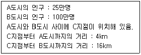
- 4:1
- 1:4
- 16:1
- 1:16
- 1:1
(정답률: 37%)
44. “도시내의 상업직접시설을 단위로 하여, 상업시설의 규모와 상업시설까지 걸리는 시간거리를 중심으로 각 상업시설을 방문할 확률을 계산하고, 이를 모두 합하여 해당 상업시설의 흡인력을 계산” 한 것과 가장 관련이 깊은 사람은?
- 레일리(Reilly, W. J)
- 컨버스(Converse, P. D.)
- 허프(Huff, D. L.)
- 애플바움(Applebaum, W.)
- 크리스텔러(Christaller, W.)
(정답률: 47%)
45. 점포의 매출을 추정하기 위해서는 먼저 상권의 규모와 특성을 조사해야 한다. 다음 중 상권 내 소비자들에 대한 횡단조사를 통해 파악하기가 가장 어려운 상권 특성은?
- 상권의 쇠퇴 또는 팽창
- 세대의 수
- 세대별 구성원 수
- 연령별 인구구성
- 가구별 소득 분포
(정답률: 46%)
3과목: 유통마케팅
46. 다음 글상자에서 설명하고 있는 것은?
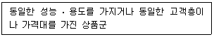
- 상품 구색(product assortment)
- 상품 품목(product item)
- 상품 계열(product line)
- 상품 믹스(product mix)
- 상품 카테고리(product category)
(정답률: 46%)
47. 브랜드에 대한 설명으로 옳지 않은 것은?
- 기업 브랜드(corporate brand) : 기업명이 브랜드 역할을 하는 것
- 패밀리 브랜드(family brand) : 여러 가지 종류의 상품에 부착되는 브랜드
- 개별 브랜드(individual brand) : 한 가지 종류의 상품에만 부착되는 브랜드
- 브랜드 수식어(brand modifier) : 브랜드 뒤에 붙는 수식어
- 자체 브랜드(private brand) : 주문자 제조방식이 아닌 제조기업이 자체 제조한 상품에 부착한 브랜드
(정답률: 52%)
48. 많은 구매자와 많은 판매자로 구성된 시장으로, 어떤 구매자나 판매자도 시장가격결정에 큰 영향을 미치지 못하는 경쟁상태는?
- 완전 경쟁
- 독점적 경쟁
- 과점적 경쟁
- 완전 독점
- 완전 과점
(정답률: 62%)
49. 유통업체의 서비스 품질을 평가하기 위해 고객의 피드백을 수집하는 여러 방식 중 다음에서 가장 높은 대표성과 신뢰성을 갖춘 것은?
- 서비스 피드백 카드
- 미스터리 쇼핑
- 개별고객의 자발적인 불평 제기
- 표적집단을 활용한 토의
- 1,000명의 표본을 활용한 설문조사
(정답률: 53%)
50. CRM의 도입 배경에 대한 설명으로 가장 옳은 것은?
- 고객 데이터를 통해서 계산원의 부정을 방지하기 위한 것이다.
- 고객과의 지속적 관계를 발전시켜 고객생애가치를 극대화 하려는 것이다.
- 상품계획 시 철수상품과 신규취급 상품을 결정하는데 도움을 주려는 것이다.
- 매장의 판촉활동을 평가하는 정보를 제공하여 효율적인 판매촉진을 하려는 것이다.
- 각종 판매정보를 체계적으로 관리하여 상품 회전율을 높이고자 하는 것이다.
(정답률: 66%)
51. 중간상의 협조를 얻기 위한 제조업자의 촉진수단에 해당하지 않는 것은?
- 거래할인
- 판촉지원금
- 쿠폰
- 기본계약할인
- 상품지원금
(정답률: 70%)
52. 카테고리 수명주기 단계 중 소매점들이 취급하는 상품 카테고리에 포함되는 품목의 다양성이 가장 높은 단계는?
- 도입기
- 성숙기
- 성장기
- 쇠퇴기
- 소멸기
(정답률: 51%)
53. 다음 글 상자에서 공통으로 설명하는 용어는?
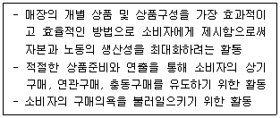
- 윈도우 디스플레이
- 인스토어 머천다이징
- 상품화 활동
- 상품 구성 전략
- 판매촉진 진열
(정답률: 43%)
54. 소매상의 강점과 약점을 파악하기 위한 분석 요인 중 소매상 내적 요인에 해당하지 않는 것은?
- 취급하는 상품의 구색
- 제공하는 대고객 서비스
- 경영기법과 판매원 능력
- 소비자의 기대와 욕구
- 조직에 대한 종업원의 태도
(정답률: 51%)
55. 비표본추출오류의 하나인 면접자 오류에 해당하지 않는 것은?
- 응답자 선택 오류
- 질문 오류
- 기록 오류
- 기만 오류
- 측정 오류
(정답률: 29%)
56. 다음 글 상자에서 설명하는 용어는?
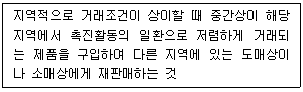
- 선물구매(forward buying)
- 전매(diversion)
- 기회주의적 행동
- 촉진일탈
- 공제전환
(정답률: 56%)
57. 다음 글 상자에서 공통으로 설명하는 도매상은?
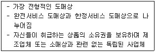
- 제조업자 도매상
- 상인도매상
- 대리인
- 브로커
- 수수료상인
(정답률: 65%)
58. 점포의 내점률과 객단가에 관한 설명으로 옳지 않은 것은?
- 객단가는 매출액을 고객수로 나누어 계산한다.
- 객단가는 고객 1인당 평균구매액을 의미한다.
- 내점률은 점포 앞을 지나가는 통행객 수 중에서 몇 명이 점포에 들어왔는지를 나타내는 비율이다.
- 내점률은 내점객수를 점포상권 범위 내에 거주하는 사람들의 수로 나눠 구하기도 한다.
- 내점률은 고객흡인율이라고도 하는데 총매출액에 영향을 미치는 구매객수와 반비례한다.
(정답률: 56%)
59. 점포의 관리에 대한 설명으로 옳지 않은 것은?
- 점포의 상호는 짧은 시간 내에 점포특성을 전달할 수 있어야 하고, 고객의 눈길을 끌면서도 너무 길지 않아야 한다.
- 간판 중에서 돌출간판은 허가를 받아야 하고 기타 부착용 간판은 신고를 해야 한다.
- 점포의 조명이 전체적으로 너무 밝으면 주의가 산만해져 구매의욕이 상실될 수 있으므로 적절한 스포트라이트의 활용이 필요하다.
- 상품 진열・저장을 위한 진열장, 캐비넷, 선반 등은 집기에 포함되며, 판매를 보조하는 금전등록기, 손수레 등은 장비에 포함된다.
- 쇼윈도우의 형태를 완전개방형, 반개방형, 완전폐쇄형으로 구분할 때, 고급스러운 분위기에 유리한 것은 완전개방형이다.
(정답률: 66%)
60. 다음 글 상자의 ○○홈쇼핑이 실행한 마케팅조사기법은?
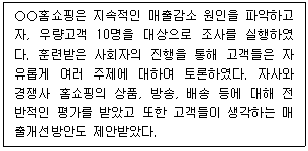
- 민속학적 조사
- 서베이조사
- 실험조사
- 표적집단면접조사
- 전문가조사
(정답률: 67%)
61. 다음 사례에서 나타난 경로갈등의 원인으로 가장 적합한 것은?
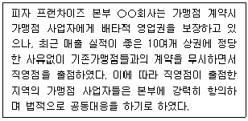
- 영역불일치
- 목표불일치
- 이해불일치
- 인식불일치
- 수단불일치
(정답률: 56%)
62. 영향력 행사 방식과 관련된 '힘의 원천'을 연결한 것으로 옳은 것은?
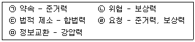
- ㉠, ㉡
- ㉠, ㉤
- ㉡, ㉤
- ㉢, ㉣
- ㉢, ㉤
(정답률: 65%)
63. 유통마케팅 조사에서 2차 자료를 사용하려면 먼저 품질을 평가해야 하는데, 그 품질평가 기준으로서 가장 옳지 않은 것은?
- 회사 정보시스템에 포함된 내부성
- 조사문제 해결 시점 기준의 최신성
- 수집 및 보고 과정의 정확성
- 수집 및 보고 과정의 객관성
- 조사 프로젝트와의 적합성
(정답률: 50%)
64. 판매자가 가격을 2% 인상했을 때 수요가 10% 감소한다고 가정할 때, 수요의 가격탄력성은?(문제 오류로 가답안 발표시 2번으로 발표되었지만 확정답안 발표시 2, 4번이 정답처리 되었습니다. 여기서는 가답안인 2번을 누르시면 정답 처리 됩니다.)
- -1.8
- -5
- 0.2
- 5
- -0.2
(정답률: 60%)
65. 소매점포의 구성과 배치에 관한 원칙으로 가장 옳지 않은 것은?
- 점포분위기는 표적고객층과 걸맞아야 하고, 그들의 욕구와 조화를 이룰 수 있도록 설계해야 한다.
- 점포의 구성과 배치는 고객의 충동구매를 자극하지 않도록 설계해야 한다.
- 점포의 내부 디자인은 고객의 구매결정에 도움을 줄 수 있어야 한다.
- 점포의 물리적 환경은 고급스러움보다 상품과 가격대와의 일관성이 더 중요하다.
- 판매수익이 높고 점포의 분위기를 개선할 수 있는 품목을 점포의 좋은 위치에 배치한다.
(정답률: 70%)
66. 다음 글 상자 안의 소비자 행동에 대응하기 위한 유통기업의 전략으로 가장 옳은 것은?
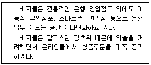
- 중간상 생략 전략
- 제3자 로지스틱스 전략
- 전속적 유통 전략
- 수직적 마케팅시스템 구축 전략
- 복수경로 유통 전략
(정답률: 51%)
67. 판매촉진(또는 판촉)에 관한 설명으로 가장 옳지 않은 것은?
- 판촉은 시용(trial)이나 구매와 같은 즉각적인 행동을 유발하는 것이 목적이다.
- 판촉과 광고는 상호 대체적이어서 함께 사용하지 않는 것이 원칙이다.
- 경쟁점포와 차별화하기 어려울수록 판촉의 활용 빈도가 높아진다.
- 푸시(push)전략에는 소비자판촉보다 영업판촉이 적합하다.
- 새로운 고객을 유치하지 못한 판촉으로 인해 판촉실시 이후에 오히려 판매량이 낮아질 수 있다.
(정답률: 65%)
68. 제조업자가 실행하는 촉진전략으로 푸쉬(push)와 풀(pull)전략이 있다. 다음 중 푸쉬전략의 흐름으로 옳은 것은?
- 제조업자 → 소매상 → 소비자 → 도매상
- 제조업자 → 도매상 → 소매상 → 소비자
- 소비자 → 소매상 → 도매상 → 제조업자
- 소비자 → 제조업자 → 도매상 → 소매상
- 도매상 → 소매상 → 제조업자 → 소비자
(정답률: 67%)
69. 항시최저가격(Every Day Lowest Price)전략에 대한 설명으로 가장 적절한 것은?
- 제품라인 가격결정 전략이다.
- 소매가격 유지 정책이다.
- 고객가치기반 가격결정 전략이다.
- 원가기반 가격결정 전략이다.
- 경쟁기반 가격결정 전략이다.
(정답률: 47%)
70. ( ㉠ )과 ( ㉡ )에 들어갈 용어를 올바르게 나열한 것은?
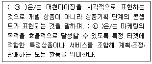
- ㉠ VP(visual presentation), ㉡ VMD(visual merchandising)
- ㉠ PP(point of sale presentation), ㉡ BI(brand identity)
- ㉠ IP(item presentation), ㉡ VMD(visual merchandising)
- ㉠ VMD(visual merchandising), ㉡ IP(item presentation)
- ㉠ BI(brand identity), ㉡ VP(visual presentation)
(정답률: 46%)
4과목: 유통정보
71. 글상자의 ( )안에 들어갈 용어로 옳은 것은?
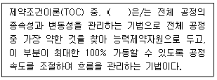
- DBR
- JIT
- QR
- 6sigma
- ECR
(정답률: 40%)
72. 데이터베이스 구축과 관련된 용어에 대한 설명으로 가장 옳지 않은 것은?
- RDB - 관계형 데이터를 저장하거나, 수정하고 관리할 수 있게 해 주는 데이터베이스
- NoSQL – Not Only SQL의 약자이며, 비관계형 데이터 저장소로 기존의 전통적인 방식의 관계형 데이터베이스와는 다르게 설계된 데이터베이스
- RDB – 테이블 스키마가 고정되어 있지 않아 테이블의 확장과 축소가 용이
- NoSQL – 테이블간 조인(Join)연산을 지원하지 않음
- NoSQL – key-value, Document Key-value, column 기반의 NoSQL이 주로 활용되고 있음
(정답률: 32%)
73. 디지털 경제시대에 나타나는 특징으로 가장 옳지 않은 것은?
- 생산량을 증가시킴에 따라 필요한 생산요소의 투입량이 점점 적어지는 현상이 나타난다.
- 투입되는 생산요소가 늘어나면 늘어날수록 산출량이 기하급수적으로 증가하는 현상이 나타난다.
- 시장에 먼저 진출하여 상당규모의 고객을 먼저 확보한 선두기업이 시장을 지배할 가능성이 높아진다.
- 생산요소의 투입량을 증가시킬 때 그 생산요소의 추가적인 한 단위의 투입이 발생시키는 추가적인 산출량의 크기가 점점 감소되는 현상이 나타난다.
- 생산량이 많아질수록 한계비용이 급감하여 지속적인 성장이 가능해 진다.
(정답률: 33%)
74. 물류의 운송 및 보관 활동을 수행함으로써 창출될 수 있는 효용으로 가장 적합한 것은?
- 형태 효용, 장소 효용
- 형태 효용, 시간 효용
- 시간 효용, 장소 효용
- 시간 효용, 소유 효용
- 장소 효용, 소유 효용
(정답률: 54%)
75. 아래 글상자가 뜻하는 SCM 전략으로 가장 옳은 것은?
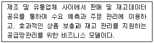
- QR(Quick Response)
- CMI(Co-Managed Inventory)
- ECR(Efficient Consumer Response)
- CRP(Continuous Replenishment Program)
- CPFR(Continuous Planning & Forecasting Replenishment)
(정답률: 34%)
76. e-비즈니스를 구성하는 요소를 크게 기반요소와 지원요소로 구분할 경우, 기술적인 기반요소에 해당하지 않는 것은?
- 네트워크
- 기술표준
- 공통서비스
- 멀티미디어 콘텐츠
- 메시지 및 정보전달
(정답률: 20%)
77. 데이터웨어하우스의 특징으로 가장 옳지 않은 것은?
- 주제별로 정리된 데이터베이스
- 다양한 데이터 원천으로부터의 데이터 통합
- 과거부터 현재에 이르기까지 시계열 데이터
- 필요에 따라 특정 시점을 기준으로 처리해 놓은 데이터
- 실시간 거래처리가 반영된 최신 데이터
(정답률: 43%)
78. 기업이 CRM의 성과를 추적하고 관리하기 위해 사용할 수 있는 지표를 크게 판매지표, 고객 서비스지표, 마케팅 지표로 구분할 때, 고객 서비스 지표에 해당하는 것은?
- 판매 요청 건수, 유지된 고객 수, 평균 해결시간
- 서비스 요청 건수, 유효한 판매 기회 건수
- 고객만족도 수준, 고객 유지율
- 일별 평균 서비스 요청건수, 평균 해결 시간
- 잠재적 고객 수, 신규 고객 유치율
(정답률: 36%)
79. 기업이 전략정보시스템을 통해 경쟁우위를 차지할 수 있는 정보시스템의 전략적 역할에 대한 설명으로 가장 옳지 않은 것은?
- 신규 업체가 시장에 진입하지 못하도록 진입장벽을 구축해 준다.
- 기업이 공급자와의 네트워크 연결을 통해 공급자의 교섭력을 강화시켜 준다.
- 구매자에게 차별적인 서비스를 제공하여 업무의존도를 높게 한다.
- 기업과 구매자 사이의 관계에 전환비용이 발생하도록 만들어준다.
- 내부시스템을 통해서 업무효율성을 높일 수 있다.
(정답률: 26%)
80. 전자상거래 보안과 관련한 주요 관점 중 아래 글상자의 ( )안에 들어갈 내용을 순서대로 올바르게 나열한 것은?
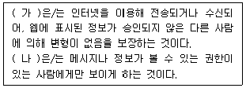
- 가 : 인증, 나 : 프라이버시
- 가 : 가용성, 나 : 기밀성
- 가 : 부인방지, 나 : 인증
- 가 : 무결성, 나 : 기밀성
- 가 : 가용성, 나 : 프라이버시
(정답률: 64%)
81. 고객로열티(customer loyalty)가 형성된 소비자들의 행동 패턴으로 가장 옳지 않은 것은?
- 로열티가 있는 고객들은 교차 구매 또는 상승 구매제안에 대해 긍정적인 반응을 보인다.
- 충성스러운 고객들은 해당 기업이나 브랜드에 갖는 가격 민감도가 증가하는 경향을 보인다.
- 로열티가 있는 고객들은 해당 기업의 제품이나 서비스에 대한 반복 구매의 행동을 보이기 시작한다.
- 충성스러운 고객들은 해당 기업과의 관계를 더욱 폭넓게 확대하고자 하는 잠재적인 의지를 가지고 있다.
- 로열티가 있는 고객들은 칭찬이나 제안과 같은 긍정적인 고객의 소리는 물론이고, 강한 불만의 소리도 제기한다.
(정답률: 67%)
82. 아래 글상자의 내용에 부합되는 용어로 가장 옳은 것은?(문제 오류로 가답안 발표시 4번으로 발표되었지만 확정답안 발표시 2, 4번이 정답처리 되었습니다. 여기서는 가답안인 4번을 누르시면 정답 처리 됩니다.)
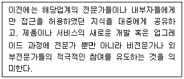
- 롱테일(long tail) 현상
- 집단 지성
- 어텐션(attention) 이코노미
- 크라우드소싱(crowdsourcing)
- 블로그
(정답률: 57%)
83. 인터넷에 대한 설명으로 가장 옳지 않은 것은?
- 인터넷은 '정보의 바다'(sea of information)라고도 불리고 있다.
- 인터넷은 중심이 되는 호스트 컴퓨터를 통해 서비스를 제공하고 있다.
- 인터넷은 컴퓨터 간의 네트워크 연결로 네트워크 위의 네트워크라고 볼 수 있다.
- 인터넷은 단일 컴퓨터 상에서 이루어졌던 정보처리 업무의 한계를 극복하기 위한 시도에서 출발하였다.
- 인터넷은 전 세계 수많은 컴퓨터들이 TCP/IP(Transmission Control Protocol/Internet Protocol)라는 통신규약으로 연결되어 있는 거대한 컴퓨터 통신망이다.
(정답률: 49%)
84. RFID에 대한 설명으로 가장 옳지 않은 것은?
- 바코드에 비해 비싼 편이다.
- 용도와 성능에 따라 읽기/쓰기 기능을 구현할 수 있다.
- 바코드에 비해 많은 정보를 가질 수 있다.
- 자라(Zara)는 RFID기술을 적용하여 재고관리 혁신을 이룩해 성공적인 선진 사례를 보였다.
- 태그는 외부로부터의 자극이나 각종 신호를 감지, 검출하여 전기적 신호로 변환, 출력하는 장치이다.
(정답률: 38%)
85. 피라미드와 같은 전형적인 조직구조 형태에서는 조직 수준별로 의사결정, 문제해결, 기회포착에 요구되는 정보유형이 각기 다르다. 조직 수준과 의사결정 유형, 특성에 대한 설명으로 가장 옳지 않은 것은?
- 전략적 수준은 대부분 비구조화된 의사결정 문제들이 대부분이다.
- 병가를 낸 직원이 몇 명인가?는 운영적 수준에서 관리해야 할 정보이다.
- 효과성에 초점을 둔 핵심성공요인은 운영적 수준에서 고려되어야 할 측정척도이다.
- 관리적 수준의 대표적인 구성원 유형은 중간 경영자, 매니저, 감독 등이다.
- 운영적 수준의 의사결정은 구조적, 반복적인 특성을 가진다.
(정답률: 30%)
86. 지식의 분류체계를 사물지, 사실지 및 방법지로 구분할 때, 사실지에 해당하는 것은?
- 나는 컴퓨터를 안다.
- 나는 해킹 방법을 안다.
- 나는 상품의 제조방법을 안다.
- 나는 컴퓨터를 조립하는 방법을 안다.
- 나는 지구가 자전하고 있다는 것을 안다.
(정답률: 65%)
87. QR 코드의 설명으로 가장 옳지 않은 것은?
- 바코드와 동일한 양의 자료를 표현하려면 사각형의 모양이라 크기가 더 커야한다.
- 일부분이 손상되어도 바코드에 비해 인식률이 높은 편이다.
- 바코드에 비해 담고 있는 정보의 양이 크다.
- 여러 QR코드로 나뉘어 저장된 정보를 1개의 데이터로 연결하는 것이 가능하다.
- 360° 어느 방향에서든지 인식이 가능하다.
(정답률: 64%)
88. 친화적인 모바일 웹사이트를 구축하려할 때 고려해야 할 사항으로 가장 옳지 않은 것은?
- 해상도와 비율을 모바일에 최적화된 이미지로 조정한다.
- 자바 스크립트의 사용을 최대한 많이 한다.
- 텍스트보다는 직관적인 아이콘이나 동영상을 적절하게 사용한다.
- 서비스의 주요 정보를 쉽게 찾을 수 있도록 배치한다.
- 지리정보기술을 적절하게 융합하여 활용한다.
(정답률: 66%)
89. 지식변환이 일어나는 과정의 사례 중, 지식변환 형태가 다른 것은?
- 공급자와 고객이 함께 직접 체험함으로서 나름의 정보를 모으는 프로세스
- 판매현장이나 제조현장에서 대화나 관찰을 통해 정보를 모으는 프로세스
- 스스로 쌓은 경험을 자기 머리 속에 체계적으로 저장하는 프로세스
- 자기 생각이나 신념 지식을 말이나 글로 표현하지 않고, 행동하는 것으로 보여줌으로서 동료나 부하가 나름 체득화하여 공유하는 프로세스
- 아직 말이나 글로 표현되지 않은 자기의 생각, 사고, 이미지, 노하우 등을 글이나 그림과 같은 형태로 변환하여 보여주는 프로세스
(정답률: 41%)
90. 쿠키(cookie)로부터 파악할 수 있는 정보가 아닌 것은?
- 회원정보
- 사용한 컴퓨터 서버
- 사용한 컴퓨터 사양
- 서치(search) 정보
- 상품 구매정보
(정답률: 61%)